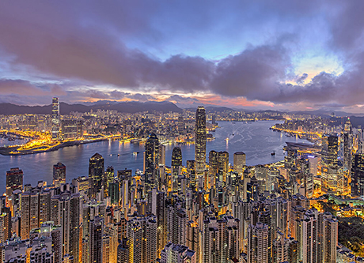
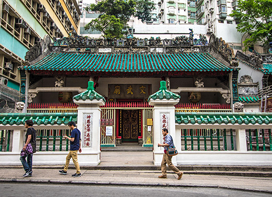

-

Пик Виктория
Пик, названный в честь королевы Виктории, является самой высокой точкой острова и входит в число главных достопримечательностей Гонконга. Наиболее удобный и быстрый способ добраться до пика Виктория – сесть на горный трамвай, который считается одним из самых крутых фуникулеров в мире.
На вершине есть несколько обзорных площадок, с которых открываются завораживающие виды на город с его небоскребами, на сверкающую бухту Виктория и окружающие зеленые холмы. -
Паром Star Ferry
Паромы компании Star Ferry с 1888 года перевозят пассажиров между островом Гонконг и районом Коулун. Захватывающие панорамы открываются с паромных причалов, а также во время пересечения бухты Виктория на пароме. Особенно неизгладимое впечатление производит морская прогулка в вечернее время, когда с воды открываются завораживающие виды города с гигантскими небоскребами, подсвеченными мириадами огней.
-
Большой Будда
Эту огромную бронзовую статую на острове Лантау называют Большой Будда за ее колоссальные размеры. Создание уникальной скульптуры завершилось в 1993 году. Величественный Будда восседает на вершине холма в окружении деревьев.
Его устойчивое расположение и спокойная поза символизирует гармонию между человеком и природой. Огромная статуя весом более 250 тонн является одной из главных достопримечательностей Гонконга. А восхитительные панорамные виды, открывающиеся с верхней платформы, делают ее еще более популярной среди туристов. -
Монастырь Чилинь и сад Нан Лиан
Этот буддийский монастырь является ярким образцом архитектуры, типичной для времен правления династии Тан, а находящиеся напротив чудесные сады Нан Лиан – это гавань тишины и спокойствия, скрытая от шумных улиц Гонконга.
В шестнадцати залах храмового комплекса можно увидеть великолепную резьбу и многочисленные статуи божеств, например, золотого Будды Шакьямуни, божества милосердия Гуаньинь и многих других бодхисатв. Не менее прекрасны ландшафтные сады храма, которые гармонично дополняют традиционную архитектуру пагоды, колокольни и монастырской библиотеки, основанной в 1934 году. -
Горный трамвай
Гонконгский фуникулер открылся в 1888 году и с тех пор пользуется популярностью как у местных жителей, так и у туристов. Это удобный транспорт для поездок в высокогорные районы острова. Во время поездки на горном трамвае вы сможете увидеть старейшие исторические районы Гонконга, а также захватывающие виды городских небоскребов и бухты Виктория. Однако самые потрясающие панорамы ждут вас на вершине пика Виктория – одной из главных достопримечательностей Гонконга.
-
Гонконгский городской парк
Если вы ищете в городе тихое, живописное место, чтобы расслабиться после напряженного утреннего осмотра достопримечательностей, то самый подходящий вариант – Гонконгский городской парк. Парк спрятан среди небоскребов, банков и отелей у подножия пика Виктория.
Его ландшафтные сады и альпинарии прекрасно дополняют сложный природный рельеф, нетипичный для парков. Помимо обилия зелени, здесь много цветов, водопадов и фонтанов, а в центре парка находятся два чудесных озера.
Местные жители часто приходят в городской парк, чтобы позаниматься оздоровительной гимнастикой тай-чи, посидеть в небольшом кафе или просто отдохнуть в тени деревьев. На территории парка находится гонконгский Центр визуальных искусств, Дом-музей чайной посуды, огромные птичьи вольеры, детские площадки и еще много интересного. -
Монастырь 10 000 Будд
Ежедневно в небольшую деревушку Пай Тау в районе Ша-Тин приезжают тысячи туристов, чтобы увидеть одну из главных достопримечательностей Гонконга – Монастырь 10 000 Будд. На самом деле, статуй здесь значительно больше, чем отражено в названии – их около 13 тысяч.
Фантастическая архитектура, богатство внутреннего убранства, живописные пейзажи среди холмов и множество статуй Будды, отличных по форме, выражению лица, цвету и материалам – все это, бесспорно, произведет ошеломляющее впечатление на любого посетителя.
Монастырский комплекс довольно молодой – его строительство завершилось в 1957 году. Чтобы попасть в обитель, придется преодолеть 431 ступеньку, по обеим сторонам которых установлены 500 статуй Будды в натуральную величину. Наверху возвышается красивая девятиярусная пагода, а рядом с ней находится один из пяти храмов монастыря. -
Набережная в районе Чимсачей-Ист
Прогулка по набережной в районе Чимсачей-Ист и открывающийся с нее вид на небоскребы Гонконга подарят вам незабываемые впечатления. Во время прогулки вы сможете увидеть несколько интересных городских достопримечательностей: историческую Часовую башню, Гонконгский культурный центр, городской Музей космонавтики.
А еще здесь приятно просто посидеть в одном из многочисленных кафе или ресторанов. Каждый день после захода солнца с набережной Чимсачей-Ист открывается фантастический вид на город – светящиеся огнями небоскребы красиво выделяются на фоне ночного неба, а в 20:00 начинается потрясающее световое шоу Симфония огней. -

Храм Ман Мо
Это старейший храм в Гонконге, датируемый 1847 годом. Он был возведен в честь бога литературы Мана и бога войны Мо – их почитали школьники и студенты, стремящиеся достигнуть успехов в учебе. В храме Ман Мо всегда тихо и спокойно – это атмосферное место идеально подходит для медитаций и размышлений. Размеренная жизнь храма резко контрастирует с бешеным ритмом находящегося неподалеку финансового района города.
-
Храм Вонг Тай Син
Красивый храм Вонг Тай Син в северной части района Коулун – один из самых известных в Гонконге. Его называют еще Храмом Трех религий, так его посещают представители даосизма, буддизма и конфуцианства.
Храмовый комплекс был возведен в честь Вонг Тай Сина (Великого бессмертного Вонга) – почитаемого даосского божества, обладающего даром исцеления. Архитектура храма традиционна для китайских религиозных сооружений – мощные красные колонны, золотая крыша, красочные залы и павильоны. Большой популярностью пользуется практика гадания «кау чим» – сюда приходят многие желающие получить ответы у священного предсказателя. -
Ночной рынок на Темпл-стрит
Когда наступает вечер и зажигается неоновое освещение, этот многолюдный гонконгский рынок начинает жить своей бурной жизнью. Он занимает несколько городских кварталов – от Man Ming Lane на севере до Nanking St на юге, а затем храмовый комплекс Тин Хау разделяет его на две части.
В 1920-х годах в этом месте собирались торговцы, чтобы продавать товары посетителям храма. Спустя столетие, толпы людей стали приходить сюда за дешевой одеждой, часами, уличной едой, чайной посудой и всякими безделушками.
Если немного удалиться от рыночных прилавков, то можно увидеть старинные кантонские певческие салоны (они напоминают клубы караоке); местных гадалок; торговцев целебными травами; ларьки, торгующие уличной едой; а также стоящих в тени представительниц древнейшей профессии. Тем, кто хочет насладиться местной уличной едой, лучше отправиться на улицу Woo Sung, идущую параллельно восточной части рынка, или к участку рынка, расположенному севернее храма. Займите место за столиком открытой кухни, где на сковороде вок готовят морепродукты, лапшу, жареное мясо, а также подают холодное пиво. -
Набережная Абердина
Набережная Абердина протяженностью 800 м утопает в зелени деревьев. На западе она плавно переходит в огромный оптовый рыбный рынок. Свежий улов привозят сюда ранним утром. На рынке можно увидеть самых разных представителей подводного мира: морских котов, крабов, морских ежей и множество видов рыб.
Здесь всегда грязно, а еще неприятно пахнет несвежей рыбой, и все же это настоящий гонконгский рынок. На восточной окраине набережной Абердина можно сесть на катер, идущий к острову Аплэйчау. И все же лучший способ исследовать красочную жизнь гавани Абердин – прокатиться на сампане. С набережной регулярно отправляются паромы – несколько раз в день на острова Ламма и Ченг Чау, и примерно два раза в неделю на остров По Той. -
Уличный рынок на Чун Енг-стрит
Чтобы попасть на рынок, садитесь на трамвай, следующий в Норт-Пойнт. Проехав Форт-хилл, вы свернете на узкую улочку, заполненную рыночными ларьками и старыми многоквартирными домами. Это и есть знаменитый уличный рынок Чун Енг.
К 17:00 здесь становится настолько многолюдно, что трамвай с трудом проезжает между торговцами и повозками. Во всем Гонконге только на рынке Чун Енг можно найти продукты из провинции Фуцзянь. Уроженцы этой провинции живут большой общиной в районе Норт-Пойнт – на рынке их можно узнать по особому диалекту.
Когда трамвай свернет за угол на Кингс-роуд, вы проедете мимо Центра китайских товаров Wah Fung, который когда-то был крупнейшим китайским универмагом в Гонконге. Интересно, что Kiu Kwan Mansion – здание, в котором находится универмаг, во время беспорядков 1967 года служило убежищем для подпольных коммунистов. -
Улица Шанхай-стрит
Прогулка по Шанхай-стрит вернет вас в далекое прошлое. Когда-то процветающая улица в районе Коулун была окружена салонами для игры в маджонг, старым ломбардом и магазинами, где продавались китайские свадебные наряды, сандаловые благовония и статуи Будды.
Это идеальное место для покупки оригинальных сувениров, таких, например, как забавные деревянные изделия в форме «лунных пряников» (традиционной китайской выпечки юэбин) с изображением рыб, свиней или пожеланий счастья; бамбуковые корзины-пароварки; длинные палочки для перемешивания еды или красивые керамические вазы и чаши. -
Аллея звёзд
Прогуливаясь по набережной Чимсачей, обязательно побывайте на известной Алее звезд. Подобно голливудской Аллее славы, Аллея звезд в Гонконге является данью уважения всемирно известным китайским актерам и деятелям киноиндустрии.
Здесь вы сможете увидеть мемориальные звезды таких мировых знаменитостей , как Брюс Ли, Джеки Чан, Джет Ли, Вонг Карвай и многих других. Помимо мемориальных досок и памятных звезд, на набережной установлено несколько больших скульптур, в том числе статуя Брюса Ли в боевой стойке. Торжественное открытие Аллеи звезд состоялось в 2004 году на южном побережье полуострова Коулун, позже она была реконструирована и расширена. -
Кафедральный собор Сент-Джонс
Эта старейшая из трех сохранившихся англиканских церквей является историческим памятником города. Собор находится на территории Правительственного холма и фасадом выходит на деловой район Гонконга. Кафедральный собор, построенный в форме креста в стиле английской готики, является резиденцией англиканского архиепископа Гонконга.
У храма довольно необычная история – в годы Второй мировой войны (в период японской оккупации) он был превращен в офицерский клуб, и многие витражные окна были удалены. Среди туристов, приезжающих в Гонконг на Рождество, очень популярна полуночная служба в соборе, но чтобы попасть на нее, придется занимать очередь с 21:00. -
Центр китайской оперы
Xiqu Centre – это современный культурный центр, предназначенный для популяризации китайской оперы (вид театрального искусства с богатыми национальными традициями). Театрально-образовательный комплекс находится в районе Западного Коулуна.
В него входят: огромный просторный театр, камерный театр, восемь профессиональных студий, конференц-зал и атриум для проведения небольших мероприятий. Дизайн здания сам по себе является неординарным произведением архитектурного искусства. По форме сооружение похоже на традиционный китайский фонарик, а главный вход в здание напоминает раздвинутый театральный занавес. -

Остатки южных ворот города-крепости Коулун
Старые Южные ворота, еще один объявленный памятник парка, более века служили главным входом в Город-крепость. Во время сноса города-крепости в 1994 году на первоначальном месте Южных ворот были обнаружены важные находки, в том числе гранитные плиты, мощение, фундаменты, выложенная плитняком дорожка и дренажная канава. Эти артефакты были сохранены в их первоначальном виде для всеобщего обозрения.